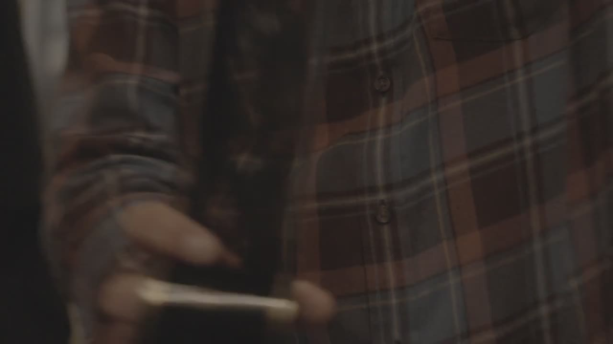
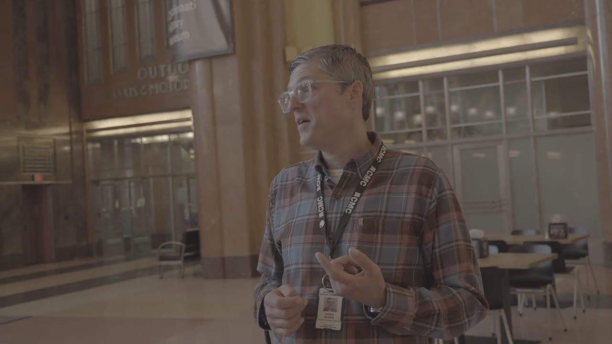

Featured project / Documentary
Behind the scenes
at OMNIMAX.
Interview with James Burns

The documentary
Daniel Yanac McDonald
Evan Meisberger
Aiden Hughes
this project explores the history of OMNIMAX and how the Cincinnati Museum Unio terminal is operating the system today. Myself, Evan Meisberger and Aiden Hughes made this documentary, my role was conducting the interview by asking the questions, making sure that camera 2 was operating and took b Roll of the theater and museum
Watch the documentary

Loads a YouTube player. Watch on YouTube ↗
Listening.
Framing.
Supporting the story.

even though I was conducting the interview, I made the choice to let the interviewee James Burns was tell us the story which meant I had to be listener and add question added to direct the interview where I wanted to go without it seeming like a questionnaire. I was also incharege of one cameras during the interview and makes sure it was on frame and focused shooting right material tht our team needed. I help with B- roll by adding visuals footage that allowed the views to see what was being talk about during the interview.
Selected footage
Filmed by Daniel Yanac McDonald · Select a frame to play a silent clip.
What I’m taking forward
Definitely, be a good listener and being adaptable to work in new areas on the spot "to be go interviewer you need to be good listener